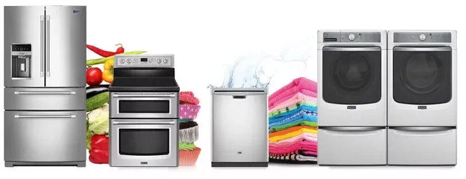

TV AC washingMachine Fridge Repairs

Service centre Ajmer - 9414456385 is here to provide services,repairing, installation for all types of home appliances like Air Conditioner, Refrigerator, Microwave, LED LCD TV, Washing Machine, RO Water Purifier of all brands like Lg, Samsung, Haier, Panasonic, Voltas, OGeneral, Mitsubishi, Bosch, Carrier, Bluestar, Onida, Sansui Etc.We generally try to complete our job at customer end.Customer is very thankful when he gets door step or onsite solutions at home,because its very easy and beneficial for them.We always try our best to get in touch as soon as possible.It is fully private service center,offering chargeable services for out of warranty products.All the cities in Ajmer where we work are given below.
varsha enterprises is one of the leading Home appliance service provider company based in ajmer rajasthan. We offer all kind of repair & services for all cosumer home products like TV, LED, LCD , PLASMA,Air conditioners refrigerators Fridge , microwave ovens, washing machines etc. we provide services for all major brands such as Whirlpool , Voltas , IFB , Samsung , LG , Godrej , Kelvinator , Videocon , Electrolux , Sansui , TCL , Haier , Bluestar , Carrier , Daikin , O general , Onida , Panasonic , Sharp etc.